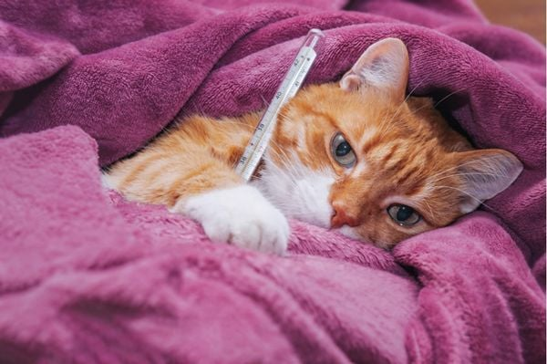
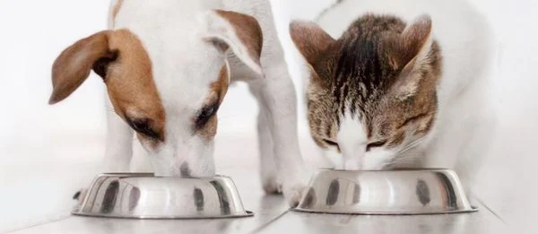

Trong cuộc sống hằng ngày thì con người cũng như động vật việc hệ tiêu hóa gặp vấn đề là việc khá thường xuyên xảy ra. Do
đó việc chó mèo bị rối loạn tiêu hóa tiêu chảy là cũng không hiếm gặp. Vậy chúng ta phải làm thế nào khi chó mèo bị rối
loạn tiêu hóa tiêu chảy, cùng tham khảo kỹ bài viết sau đây của các bạn sẽ có cái nhìn khái quát và
phương hướng điều trị đúng để tránh gây ra các biến chứng nguy hiểm cho chú cún chú meo nhà bạn nhé!
Nguyên nhân khiến chó mèo bị rối loạn tiêu hóa tiêu chảy
Chó và mèo bị rối loạn tiêu hóa sẽ bị ảnh hưởng đến dạ dày và ruột của chó dẫn đến ảnh hưởng đến sức khỏe của chú chó của
bạn đang nuôi nếu chó bị rối loạn tiêu hóa lâu ngày mà không phát hiện ra để chữa trị kịp thời thì nó có thể biến chứng
sang các bệnh khác như đường ruột, táo bón, tiêu chảy thông thường.
Một số nguyên nhân gây tiêu chảy thông thường:
–
Stress: Thí dụ nếu chó không quen đi xe, khi mang tới thú y, cho chó vào lồng, có thể làm nó tiêu chảy. Thường bệnh sẽ qua
rất nhanh.
– Thay đối thức ăn đột ngột: Một số giống chó rất nhạy cảm với việc thay đổi thức ăn, dẫn đến tiêu chảy. Do
đó, phải thay đổi thức ăn từ từ trong 1-2 tuần.
– Thức ăn thừa: bị hư, nhiều mỡ, có vật lạ (ví dụ như mảnh xương cứng
như xương gà) hoặc cho ăn quá nhiều,…Chó trưởng thành khi bị tiêu chảy thông thường có thể khống chế bằng cách cắt thức ăn.
Khi dạ dày chó rỗng 12-24 giờ, ruột sẽ được nghỉ, có thời gian lành viêm sưng và ruột sẽ không có gì để đẩy ra. Hiếm trường
hợp chó trưởng thành bị hạ lượng đường máu khi bị cắt ăn. Nếu thấy chó có vẻ yếu, ngủ lịm hay suy kiệt có thể cho uống
đường Glucose hay mật ong trên nướu trong khi chuẩn bị đưa đến thú y.
Tiêu chảy nguy hiểm
Khi tiêu chảy là biểu hiện của nhiều bệnh nghiêm trọng trên chó mèo như:
– Các bệnh do virus gây ra: Care (Distemper),
Parvovirus, Viêm gan (Hepatitis),giảm bạch cầu ở mèo…
– Các bệnh do vi khuẩn gây ra: Leptospira, E.coli, Salmonella, …
– Bệnh do ký sinh trùng, nguyên sinh động vật gây ra hoặc cùng kết hợp như: giun đũa, giun móc, giun tóc, sán, cầu
trùng, Giardia,…
Các dấu hiệu của bệnh rối loạn tiêu hóa tiêu chảy ở chó mèo.
1. Mức độ Quá cấp
chó mèo bị đau quặn vùng bụng, thân thể lạnh, suy nhược nghiêm trọng (ở mức độ này thông
thường chó mèo sẽ chết, khó cấp cứu thành công)
2. Mức độ Cấp
Tình trạng chó mèo sốt cao trong ngày đầu, bỏ ăn, không vận động, niêm mạc tái nhợt.
3. Mức độ thường
Khiến chó mèo nôn ra mật có bọt, phân có mùi thối khắm, đôi khi lẫn máu.
Khi bị mắc
chứng rối loạn tiêu hóa, Chó Mèo thường có các biểu hiện như bụng to lên; nôn mửa; phân dạng lỏng, chứa cả thức ăn chưa tiêu
hóa; tiêu chảy nhiều lần… Việc đi phân lỏng dẫn đến chó mèo mất sức, sức khỏe suy yếu dần. Đặc biệt, có những trường
hợp chó mèo đi phân ra máu do nhiễn ký sinh trùng từ môi trường xung quanh, liếm bộ lông của chúng dẫn tới việc chó mèo tử
vong.

Cách chữa trị chó mèo bị rối loạn tiêu hóa tiêu chảy
Nếu như thấy chó mèo của bạn có những triệu trứng nêu trên thì cần tiến hành ngay biện pháp chữa trị. Thông thường, việc
chữa trị sẽ kéo dài khoảng 10 ngày phụ thuộc vào mức độ nặng nhẹ của bệnh tình và sự kiên nhân trong việc chăm sóc của bạn.
Đầu tiên, cần đưa mèo đến cơ sở thú y khám chữa bệnh chó mèo gần nhất. Trong trường hợp, nếu không có cơ sở khám chữa bệnh
cho thú y, bạn cần ngưng cho ăn, chỉ cho uống và kiểm tra lại những nguyên nhân có thể gây bệnh (thức ăn, nước uống, thời
tiết …). Tuyệt đối không được uống sữa, uống sữa sẽ làm tình trạng bệnh tình thêm nguy kịch. Tiếp theo cần vệ sinh nơi ở
của chó mèo đảm bảo vệ sinh, tránh việc lây nhiễm sang vật nuôi khác cũng như tránh việc phát triển của vi khuẩn gây bệnh.
Khi thấy chó mèo của bạn có dấu hiệu phục hồi, bạn sử dụng các thực phẩm bổ trợ, trợ sức như các vitamin, cho
ăn đồ ăn ít nhưng cần thái nhỏ, nấu chín, hạn chế đồ tanh (ví dụ ăn như thịt lơn chín thái nhỏ, thức ăn hạt…) tại thời điểm này
tuyệt vẫn không nên cho ăn cá, sữa, trứng sẽ khiến tình trạng bệnh thêm nặng. Nếu có điều kiện kinh tế, bạn mua thịt bò nấu chín
thái nhỏ cho mèo ăn, ăn thịt bò sẽ giúp tăng hồng cầu trong máu, giúp mèo phục hồi nhanh hơn.
Nếu chó mèo mất nước: nhanh chóng
bù nước.
– Mất nước nhẹ, không kèm ói có thể cấp nước bằng đường uống: Pha dung dịch điện giải. Nếu chó không uống, dùng ống tiêm
bơm vào má nó 1-2 ml/kg thể trọng/giờ.
– Nếu tiêu chảy kèm theo ói: việc chó uống sẽ càng kích thích làm chó ói nhiều hơn nên
phải cấp nước bằng đường tiêm truyền. Các đường tiêm truyền: Tiêm dưới da; Tiêm xoang bụng; Truyền tĩnh mạch
–
Lượng truyền: trung bình 10-20 ml/ kg thể trọng (tùy tình trạng mất nước). Để chẩn đoán chính xác phải làm một số xét
nghiệm, chú ý kiểm tra phân vì ký sinh trùng đường ruột thường là nguyên nhân khởi phát cho các bệnh đường tiêu hóa chó.
Một số bệnh truyền nhiễm do virus gây ra không có thuốc điều trị đặc hiệu. Tuy nhiên, có thể sử dụng kháng sinh để kiểm
soát tiêu chảy, phòng nhiễm trùng kế phát.
Phòng Bệnh chó mèo bị rối loạn tiêu hóa tiêu chảy
Từ lúc chó mèo bị rối loạn tiêu hóa đến các biểu hiện xuất hiện ra
ngoài thường diễn ra trong vòng vài ngày nên rất khó phát hiện chính vì thế mà người nuôi chó nên để ý đến hệ tiêu hóa
của chó mèo và các biểu hiện của chó mèo thường xuyên hơn.
Chế độ ăn và thức ăn
Để phòng ngừa chó bị tiêu hóa các bạn nên chó chó mèo ăn đúng bữa, đủ chất, ăn thực phẩm sạch sẽ và được nấu chín, cho chó
tập thể dục thường xuyên. Khi thả chó mèo nên chú ý không để chó mèo ăn các đồ vật linh tinh và vui đùa cùng các chú chó
đang nhiễm bệnh.
Cho chó mèo ăn thức ăn nấu chín, không cho ăn thịt sống và trứng sống, vì trong thịt sống và trứng sống dễ bị
nhiễm các loại vi khuẩn gây bệnh đường tiêu hóa như: vi khuẩn thương hàn, trực khuẩn yếm khí, vi khuẩn E.coli. Không cho
chó mèo ăn thức ăn ôi thối, cho uống nước sạch không nhiễm bẩn.

Thực hiện tẩy giun sán định kỳ cho chó mèo cứ 2-4 tháng tẩy 1 lần để tránh gây tác hại cơ giới dẫn đến viêm ruột cấp.
Vệ sinh chuồng trại
Cọ rửa tẩy trùng nơi ở, chuồng, lồng trại của chó mèo để tiêu diệt bớt các
virus vi khuẩn gây bệnh và diệt sạch mầm bệnh .
Hi vọng qua bài viết các bạn có được những kinh nghiệm quý báu và các
hướng xử lý cũng như cách xử lý kịp thời khi chó mèo nhà bạn gặp phải bệnh rối loạn tiêu hóa tiêu chảy. Chúc các Sen
thành công!